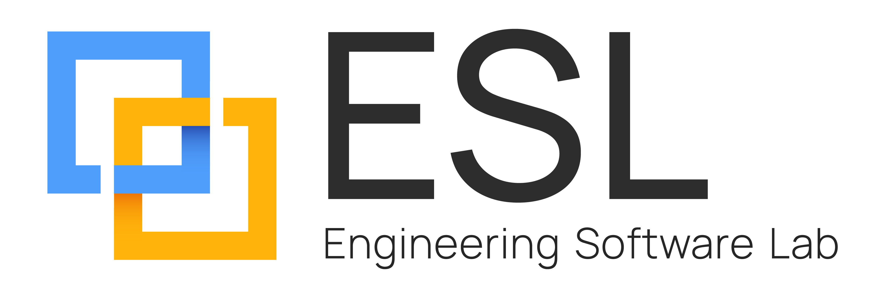
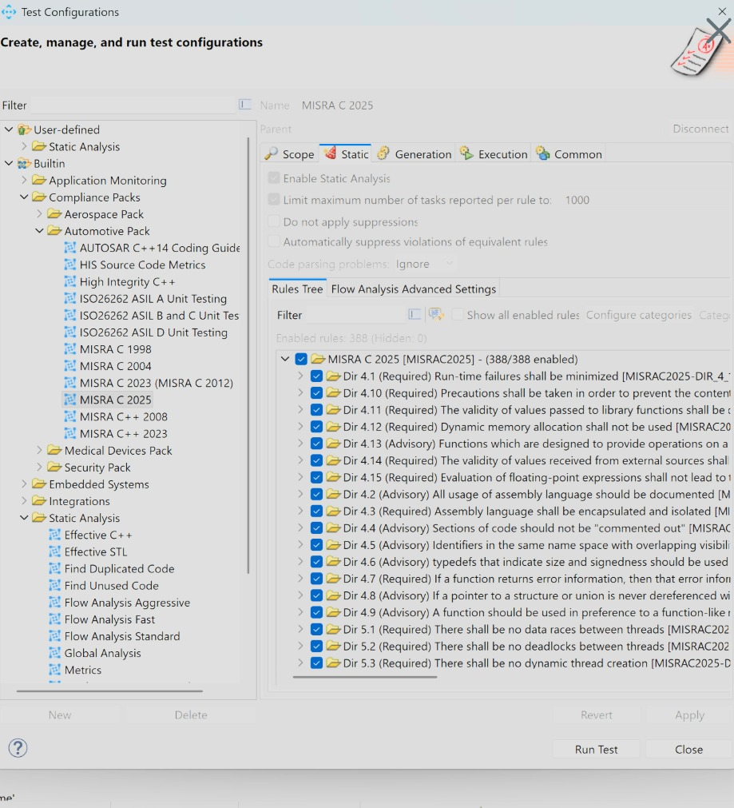
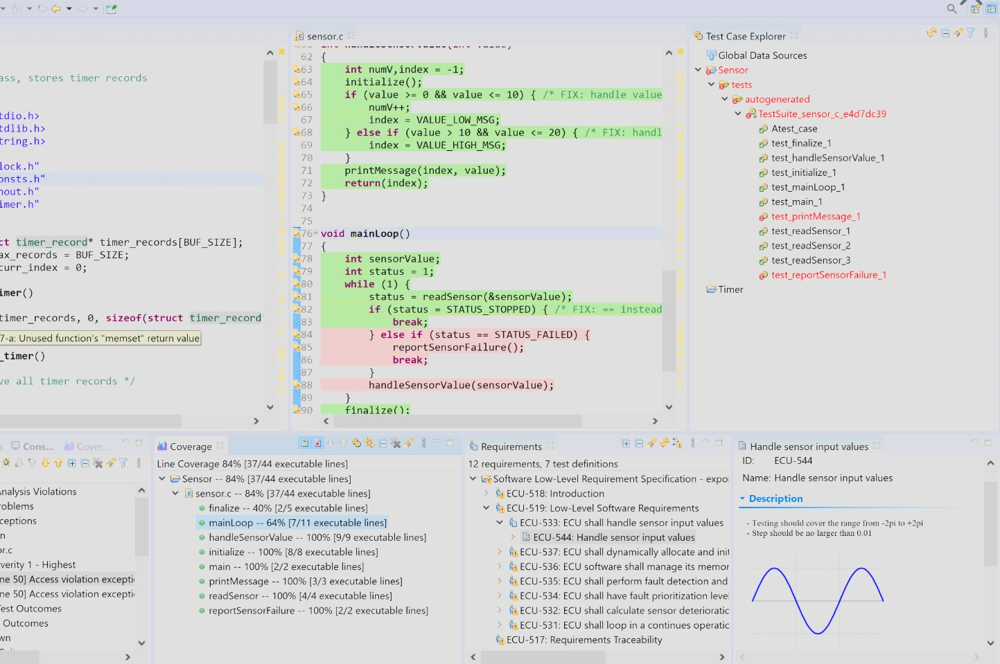

FDA software evidence services
Preparing for an FDA submission or inspection?
ESL takes complete ownership of your software evidence work.
SBOM & CVE remediation. Static analysis & bug fixing. Unit testing & code coverage. Traceability & audit-ready reports.
We do not stop at finding problems.
ESL analyzes the software, fixes the findings, reruns the tools, cleans the reports and delivers the evidence package—across source, build artifacts and binary-only systems.
SBOM + CVEsStatic analysisUnit tests + coverageALM traceability
One accountable engineering partner
Many FDA tasks. One complete software-evidence workstream.
You keep ownership of the product and submission. ESL owns the execution of the software analysis, remediation, testing and evidence tasks in scope.
Right-sized to your submission: not every product or submission level needs every activity. ESL first identifies the applicable software evidence scope with your quality and regulatory team—then performs only the work that is needed.
01 · Software supply chainSBOM reports—even from binaries only
Inventory components and dependencies from source, packages, containers, firmware or available binary artifacts. Correlate known vulnerabilities, assess relevance and produce submission-oriented reports.
02 · Source-code qualityStatic code analysis—and actual fixes
Configure language-appropriate rules, triage findings, repair defects, document justified deviations and rerun analysis until the code and evidence are clean enough for the agreed acceptance criteria.
03 · VerificationUnit testing and structural coverage
Create and execute tests, measure statement/branch/condition or other appropriate coverage, analyze uncovered code, repair testability defects and assemble objective results.
04 · TraceabilityRequirements-to-test proof in your ALM
Connect requirements, risks, tests, runs, results, defects and code evidence in Polarion or another supported ALM—so reviewers can navigate the chain rather than reconcile disconnected reports.
The deliverable is not a tool dashboard. It is a reviewed, reproducible and traceable software evidence package.
End-to-end remediation—not scan-and-leave
Find it. Understand it. Fix it. Prove it.
A long finding list does not help a submission. ESL closes the engineering loop for both source-code defects and software-component vulnerabilities.
1 · DiscoverScan source, builds, dependencies, containers, firmware and binaries available for assessment.
2 · TriageRemove noise, confirm applicability, classify impact and prioritize against product risk.
3 · RemediateFix code defects; upgrade, replace, patch or otherwise address vulnerable components.
4 · VerifyRebuild, rescan, retest and perform regression checks to confirm the remediation.
5 · EvidenceRecord tool versions, configuration, findings, dispositions, results and traceability.
Static-analysis cleanup
✓Rules and severity profile configured for the language, product and coding policy
✓Findings reviewed to distinguish defects, accepted deviations and false positives
✓Source repaired by experienced engineers—not merely reassigned to your team
✓Final scan and disposition report tied to the controlled code baseline
SBOM and CVE cleanup
✓Machine-readable SBOM plus human-readable inventory and dependency evidence
✓Known-vulnerability correlation, including binary-only discovery where feasible
✓Applicability analysis, remediation, compensating-control input or documented rationale
✓Rescan after changes, with remaining vulnerability status made explicit
Before ESL
Unknown components · noisy findings · unowned defects · incomplete tests · disconnected evidence
→
After ESL
Controlled baseline · remediated findings · repeatable tests · reviewed reports · explicit residual risk
Technology-independent execution
Your software stack should not become your evidence gap.
ESL assembles the appropriate tool and engineering workflow for the languages, targets and artifacts in your product. The exact scope is confirmed during assessment.
Source languagesBroad language coverage
C, C++, C#, Java, VB.NET and other stacks through suitable static-analysis, testing and software-composition technologies.
Execution targetsHost to embedded
Desktop, server, cloud, container, mobile, cross-compiled and resource-constrained embedded targets—including on-target testing where needed.
Available artifactsSource or binary-only
Full repositories, partial source, package manifests, build outputs, containers, firmware and binaries. SBOM work does not require a perfect source tree to begin.
Unit testing + code coverage service
- Test strategy and risk-appropriate acceptance criteria
- Automated and engineer-authored unit/integration tests
- Harnesses, stubs, mocks and target communication
- Statement, branch, condition and MC/DC where appropriate
- Uncovered/dead-code analysis and documented disposition
- Regression execution tied to the release baseline
Evidence delivered with the work
- Plans, procedures, scope and acceptance criteria
- Tool identification, versions, settings and environment
- Controlled inputs and tested software configuration
- Test specifications, expected results and actual results
- Finding/anomaly status, fixes and residual rationale
- Traceability and final summary suitable for review
One ESL engagement can combine SBOM, CVE remediation, static analysis, code repair, unit tests, coverage and ALM traceability—or provide only the individual service you need.
The ESL FDA software-evidence stack
One ESL team. Two specialized evidence pillars.
Use only the evidence activities your device, risk and submission require. ESL implements the tools, performs the engineering work, fixes findings and delivers the reviewed evidence.
Developed by ESL
SBOMator™ · FDA-focused software supply-chain evidence
- Source, package, container, firmware and binary-only analysis
- SBOM, VEX, CVSS v4.0, CVE remediation and Section 524B evidence
- MPSoC HBOM from Vivado, HLS, bitstream, HDL, firmware and per-core software evidence
- Validated CycloneDX/SPDX outputs, quality scoring, baseline drift and integrity manifests
- Local AI/ML DataBOM: CycloneDX 1.7 ML-BOM, dataset provenance and privacy-review signals
Explore SBOMator FDA Edition →
Represented and implemented by ESL
Parasoft · IEC 62304-focused software verification
- Static analysis with defect triage and source-code remediation
- Automated and engineer-authored unit testing
- Statement, branch, condition and MC/DC coverage
- Requirements-to-test traceability and ALM integration
- C/C++test is TÜV SÜD-certified for use in IEC 62304 development
Explore Parasoft Medical Devices →
Complementary roles: SBOMator connects software composition, MPSoC hardware/firmware identity and AI/ML dataset provenance to cybersecurity evidence. Parasoft produces source-code verification evidence. ESL connects both to the controlled build, requirements, tests, findings, fixes and release baseline.
The manufacturer owns the regulatory decision. ESL supplies the engineering execution and objective evidence behind it.
Static code analysis + remediation
Find and fix defects before they become audit findings.
FDA-ready evidence is not a raw warning count. Findings must be reviewed, corrected or justified, rerun and retained against the controlled software baseline.

Detect deeply
Pattern, control-flow and data-flow analysis plus abstract interpretation expose null dereferences, memory corruption, concurrency defects and dead code.
Enforce standards
Apply MISRA C/C++, CERT C/C++, CWE and project rules with reviewable compliance reports rather than an unexplained warning dump.
Clean and prove
ESL fixes real defects, documents justified deviations, reruns analysis and retains before/after evidence linked to the build and requirements.
Unit testing + structural code coverage
FDA mandates no universal coverage percentage.
Coverage criteria must be justified and commensurate with risk. Strong evidence explains what ran, what did not, why the gaps are acceptable and whether the tested configuration represents the release.

Risk-based criteria
Select statement, branch or MC/DC coverage by software risk. A headline percentage without the rationale is weak FDA evidence.
Test where it matters
Run generated or engineer-authored tests on host or target; instrument constrained firmware module by module and merge the results.
Explain every gap
Identify uncovered and dead code, add tests or document justification, preserve regression results, requirements links and tested configuration.
The FDA question: not “What percentage did you reach?” but “How do you know coverage is adequate for the risk?”
Read ESL’s analysis →
Traceability that a reviewer can follow
Every requirement should lead to evidence.
ESL can integrate the testing and analysis work with your ALM so the evidence remains connected to product intent and risk—not trapped in separate PDFs and dashboards.
Requirement
& risk control
→
Linked test case
& code
→
Test run, result
& coverage
→
Defect, fix
& approval
Concrete example · Polarion ALM
Parasoft Test Tool Suite Connector
- Polarion-authored requirements visible in Parasoft DTP
- Parasoft tests linked directly to Polarion requirements
- Executed tests export realized cases, runs and results into Polarion
- Traceability extends from requirement through tests to code
- Gaps and progress visible in DTP dashboards and Polarion traceability matrices
Capabilities described by the Polarion Extensions listing for Parasoft’s connector; deployment/version compatibility is confirmed per project.5
ESL integration service
More than installing a connector
- Define work-item types, relationships and ownership
- Map requirements and risk controls to test levels
- Configure result exchange and evidence retention
- Connect CI execution to controlled baselines
- Create traceability views and release gates
- Train engineering, QA and regulatory users
Other ALM systems: ESL applies the same evidence model using supported APIs, connectors and reporting capabilities available in the customer environment.
The outcome: when someone asks “Which requirement does this test verify?”, “Which release produced this result?” or “How was this finding closed?”, the answer is one traceable navigation path—not a document search.
Bring ESL the software—not a cleaned-up demo
We will build, clean and connect the evidence.
Start with a software evidence scoping workshop
ESL will review the intended submission context, software stack, available artifacts, existing tests and ALM environment—then define the smallest complete work package needed.
Key references
1. FDA, General Principles of Software Validation, Jan. 11, 2002, with current QMSR notice. fda.gov/media/73141/download
2. FDA, Cybersecurity in Medical Devices: QMS Considerations and Content of Premarket Submissions, Feb. 3, 2026. fda.gov/media/119933/download
3. FD&C Act §524B requirements for qualifying cyber-device submissions, summarized in FDA’s 2026 cybersecurity guidance.
4. Parasoft, Inovytec case study—customized C/C++ static analysis and ESL support. Parasoft Inovytec case study
5. Polarion Extensions, Parasoft’s Test Tool Suite Connector for Polarion ALM. extensions.polarion.com/extensions/361
6. Daniel (Dani) Liezrowice, When Code Coverage Becomes an FDA Issue, LinkedIn, July 27, 2026. Read the article
7. Parasoft, C/C++ Static Code Analysis. Parasoft static analysis
8. Parasoft, Software Development & Testing for Medical Devices. Parasoft medical devices
9. ESL, SBOMator FDA Edition. SBOMator FDA Edition
This brochure describes engineering services, not legal or regulatory advice. FDA guidance documents generally contain nonbinding recommendations unless specific statutory or regulatory requirements are cited. Applicable evidence depends on the device, software functions, risk, submission type and current FDA expectations. ESL does not guarantee FDA clearance, approval or inspection outcomes. The manufacturer retains responsibility for safety, effectiveness, quality-system compliance, risk decisions, validation and submissions. Product and company names are trademarks of their respective owners.